The Modern CLI Stack¶
Introduction¶
This is an export of my old 2022 Medium article. I've slightly modified it with new examples and changed some wording here and there. The tools mentioned in the article have stood the test of time in 2024!
This post is about the awesome (1)-based cross-platform CLI ecosystem which I’ve discovered recently. All of them share the same nice properties: they have rich defaults, convenient configuration formats, and are cross-platform. Adopting them made me feel better about my dev workflows :)
- Rust
My new stack vs the old stack:
| Stack | Shell | Prompt | Terminal Multiplexer |
|---|---|---|---|
| New | nushell |
starship |
zellij |
| Old | zsh/antigen1 |
powerlevel10k |
tmux |
The old stack is very basic and commonly found at /r/unixporn subreddit (at this point I’ve been using it for ricing my Linux setup for more than 2 years).
So, the new stack doesn’t even have a shell plugin manager? Yes! Seems like no shell plugins are needed 2. All the mentioned tools already implement everything one can need. Even more, they rarely need any configuration at all! Of course, they are very configurable, but unlike many old tools they don’t use obscure config files with tool-specific syntax. Instead of that, normal yaml or toml files are used.
After trying them out I immediately decided there was no going back.
In this post I will not describe the installation or configuration of these tools (you can always read the docs), but rather highlight the key features and explain the benefits over the traditional tools.
Nushell¶
Nushell, or nu, is a modern data-oriented shell written in Rust. It requires almost zero configuration to start working with it, even though a lot can be configured, has syntax highlighting, auto-completion and other useful features enabled by default. It implements all shell commands (like ls, cat, etc), but in a very special way - they are now aware of their inputs and outputs content. Lets take a look at this examples.
List files in the current directory:
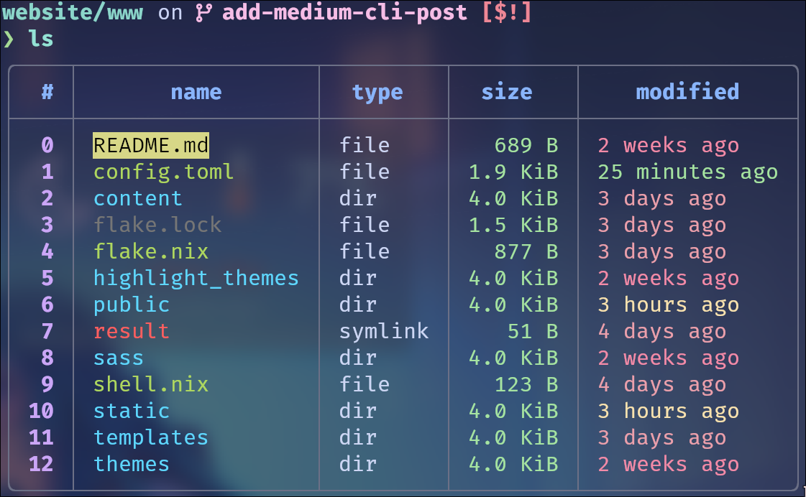
Filter by file size: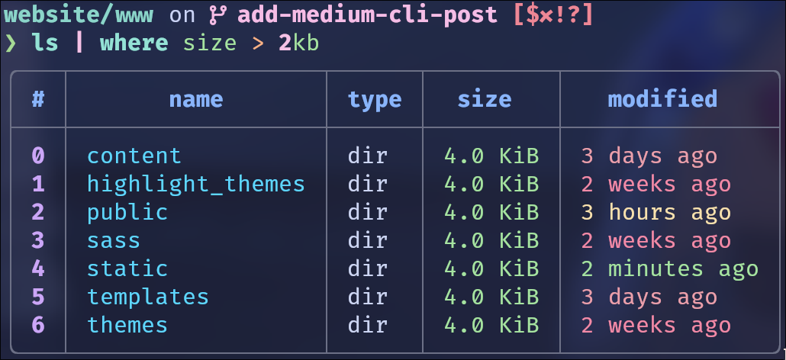
And sort by modified timestamp: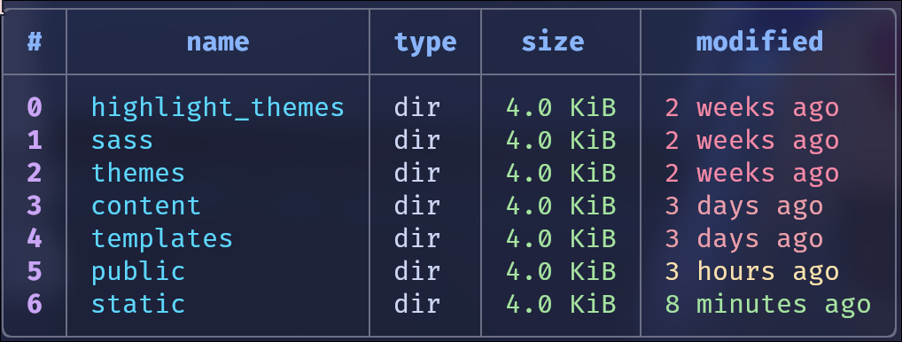
As we can see, nu stores the data representation (in this case the ls command output) as a table, while bash/zsh ls outputs simple text. In fact, the way these tables are rendered can seem familiar to some of you… yes, nu is using polars.DataFrame internally!
The same can be applied to any file, even with nested structure (not showing the full output here):
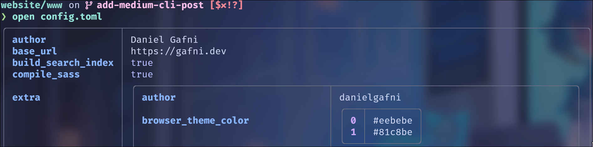
And now access a field:
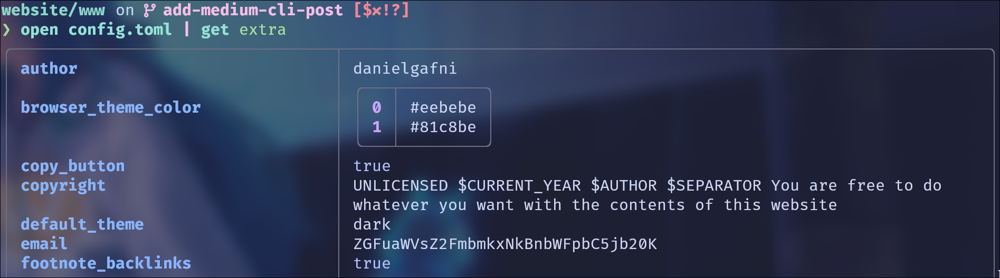
This is extremely useful when working with yaml , toml , json , csv and other structured files. No need to use grep, jq or enter vim !
Another positive side of nu is it's error handling.
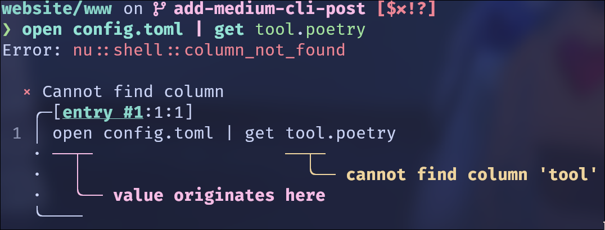
The shell is clearly pointing us at the error source.
Nu DataFrames: a bonus for a Data Scientist
Because nu is using polars internally, it has first class support for tabular operations, and it is possible to perform them from the shell directly! Of course, this outperforms pandas by orders of magnitude. A lot of complex operations on data can be performed without opening Jupyter at all.
By the way, nushell is officially supported by Poetry since 1.2.0.
Starship¶
Starship is a terminal prompt written in .. yes, in (1). It makes in very fast (actually, this is not an improvement over powerlevel10k since it’s written in C++). Starship has very rich configuration options in a simple yaml file. But, just like nushell , it doesn't need any configuration initially - all the defaults are already set! It also provides nice ready-to-use config presets.
- Rust
Starship automatically integrates with multiple other tools & technologies. It can display package versions (for example, when in a Poetry project), show AWS region, kubernetes context & namespace.. in short, it works with everything. Take a look at the full list of integrations here.
Of course, it also looks good. Here is the default prompt with no configuration:
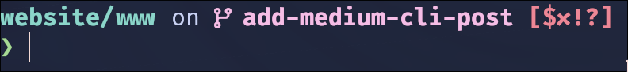
Zellij¶
Zellij is a terminal multiplexer written in Python. Kidding, it’s actually written in R…. Rust. It’s very similar to tmux, and even supports tmux commands, but has some user-friendly advantages:
- Operation modes: pane, tab, resize, etc…
- The panes are mouse-scrollable and mouse-clickable
- Layouts can be saved to simple
yamlfiles. For example, a layout can be saved for every project you are working on.
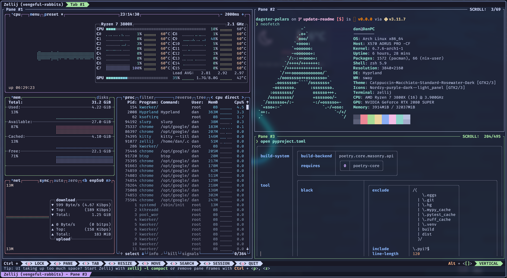
For every operational mode there are very limited possible actions. Thanks to that, a help bar is displayed showing the current available commands.
default mode
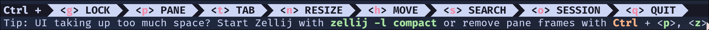
tab mode
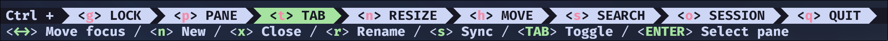
pane mode
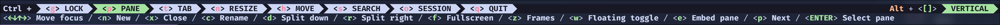
The modes can be easily switched with: ctrl+p = pane, ctrl+t = tab, etc. It’s really a blessing for a newcomer. You don’t need to read tutorials or search how to do “this thing I really need right now” in zellij. The help bar ensures you are never lost. The bar can be hidden after you learn zellij, the bar can be hidden.
Thanks to the limited available actions per mode, the navigation through zellij is greatly simplified.
Again, you don’t need to configure anything at all to achieve this! In contrary,tmux needs a dozen of plugins. Of course, zellij supports plugins too.
Bonus: other awesome CLI tools¶
Wezterm
Wezterm is a terminal emulator written in Rust. I’m currently exploring it in favor of Alacritty because the latter does not support ligatures. It can also act as terminal multiplexer and supports tabs for ssh-sessions.
bat
bat is cat with syntax highlighting:
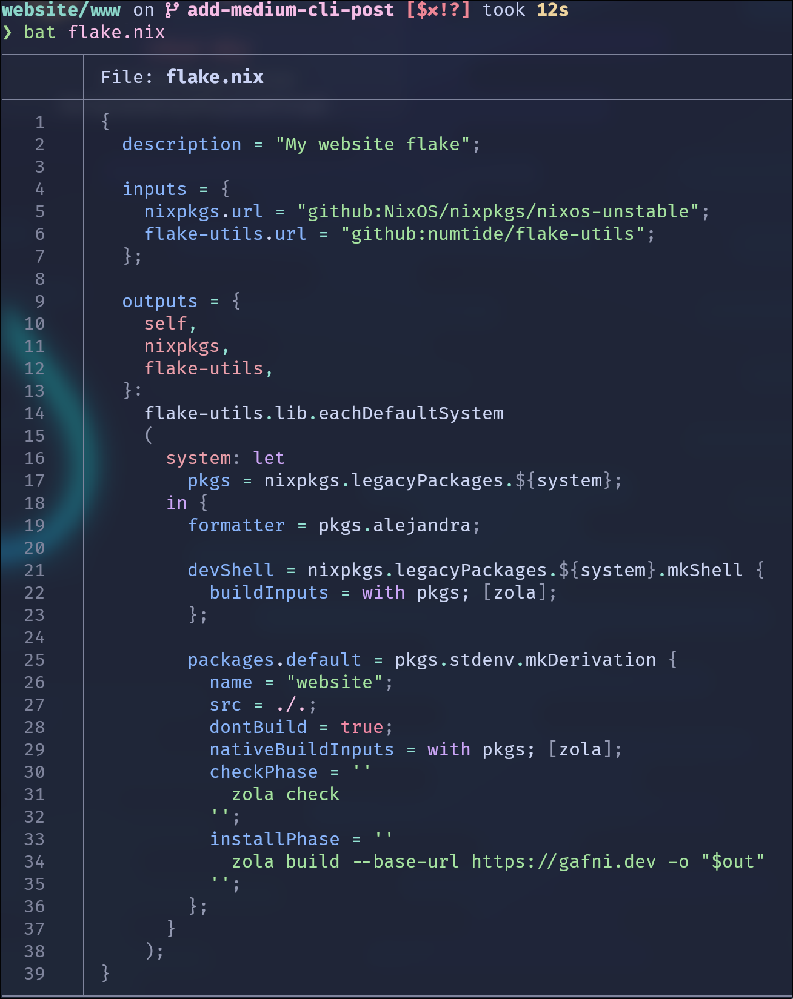
sheldon
sheldon is a shell plugin manager that currently works with bashand zsh. It has a nice CLI interface, stores the config in a readable .toml file, and is pretty fast.
btop
btopis a resources monitoring tool like htop , but with a richer and more intuitive UI and controls. Sadly, it’s not written in rust, but I decided to included it here anyway. For a Rust alternative, you can check out bottom, however, it's less mature.
Closing Notes¶
Tip
You can find more awesome Rust CLI tools in this Reddit post.
My old and new (warning: nix!) dotfiles repos include some config files which can be used for inspiration.
Finally, subscribe to my Telegram channel for more dev & ML content.